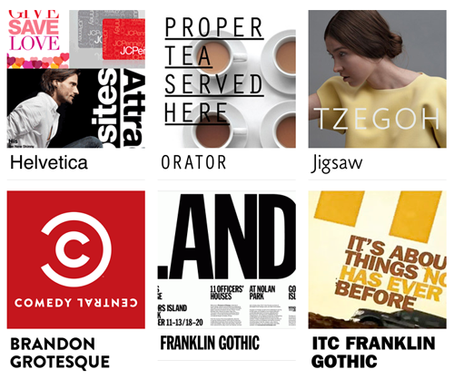

Fri, 28 Jan 2011 04:01:00 · typography · design · font · graphicdesign
Documenting Real-World Typography

For the Typography-Geeks out there, check out this wickedly interesting Fonts-In-Use site that aimto document all sort of typeface used in the real world.